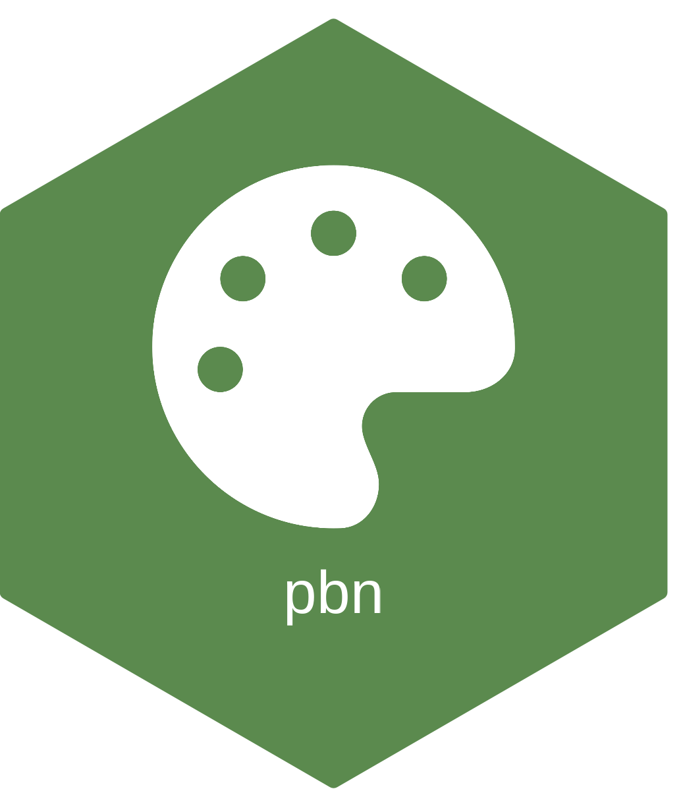

Write the output of the real data and of chosen fake scenarios
Source:R/make_outputs.R
make_outputs.Rdmake_outputs() calls the output function of the project on the results
of "real", and of each fake scenario with output = TRUE in
CFG$scenarios. The files of a fake scenario go to their own folder, and
their names start with fake_data_.
Arguments
- fn
The output function of the project,
function(results, dir). It gets the results of one scenario fromread_results(), and writes its files into the folderdir, for example withggplot2::ggsave().- scenarios
The scenarios of the run, from
scenarios().
Value
Invisibly, a data.frame with the columns scenario and file, one
row for each file written. file is relative to the project folder.
Details
Call initialize_project() first. For each scenario of scenarios,
make_outputs() does this:
"real": it callsfn(results, dir)withdir = <version>_results/real/output/.A fake scenario with
output = TRUE: it callsfnwithdir = <version>_results/<scenario>/output_fake_data/. Then it renames each file indirthatfnwrote, so that the name starts withfake_data_. It stops when a new name equals the name of another file indir. It ignores the case of the letters, as Windows and macOS do. The results of a scenario with more than 1 simulation are the stacked results, with a columnsimin each data.frame.A fake scenario without
output = TRUE: nothing.
Before it calls fn, make_outputs() deletes the folder dir and
creates it again. So no file of an earlier run stays. Keep no other file
in that folder. It stops when the folder is still there afterwards, for
example because another program holds a file open on Windows. After each
scenario, it prints one line with the folder and the number of files.
After save_results() in the same R session, make_outputs() adds its
files, its seconds and the number of warnings of fn for each scenario to
the run log <version>_results/run.md. A warning still reaches the
console, and the log holds no text of it. When make_outputs() stops, the
result of the log says so, and the errors file of the log holds the error.
In another R session it does not change the run log.
fn MUST NOT change an object of the functions folder in place, for
example with the index that a data.table subset CFG$table[x == 1] adds.
The next call of fn or of an expect_ function in this R session would
see the change. make_outputs() compares these objects before and after
each call of fn, with the rules of the check of add_analyses(). A
change fails the scenario, with the first element that changed, for
example CFG$table.
make_outputs() skips a scenario with one printed line when its
results.qs2 does not exist, or when its check.csv holds an assertion
that did not pass. Then it deletes the output folder of the scenario, so
no output of an earlier run stays beside absent or failed results. The
line says so. It does not touch a scenario that is not in scenarios. A
"real" without check.csv is not skipped, because expect_real() is
optional. When fn stops for one scenario, make_outputs() stops with an
error that names the scenario. The output of the scenarios before it
stays.
fn MUST write into dir only. Around each call for a fake scenario,
make_outputs() lists the path, the size and the modification time of
each file in <version>_results/ outside dir. It also lists the md5 of
each file modified in the last 2 seconds. When fn added, changed
or removed one of them, make_outputs() deletes the added files and stops
with the paths. It does not restore a changed or a removed file. It does
not check the call for "real", or files outside <version>_results/.
A figure of fake data carries the label "FAKE DATA" when the output
function calls stamp_fake(). A table or a text file has the name prefix
fake_data_ and the folder output_fake_data/ only. The
check_project() rule fake_data_names fails a file in
output_fake_data/ without the prefix, and a file with the prefix in
another folder.
See also
end_unless_real() for output code after the run that is not in
a function.
Other output:
stamp_fake()